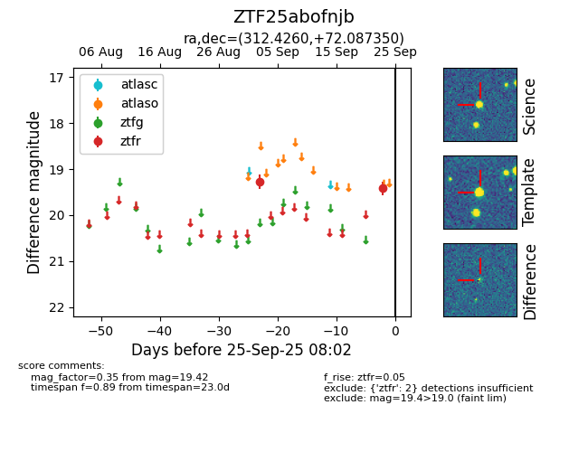

FINK: ZTF25abofnjb
Lasair: ZTF25abofnjb
ALeRCE: ZTF25abofnjb
ZTF25abofnjb (ztf,fink)
equatorial (ra, dec) = (312.4260,+72.08735)
galactic (l, b) = (106.6524,+17.38632)

last ztfr=19.42
2 ztfr detections